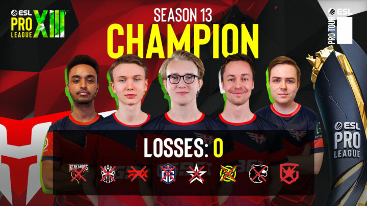

ESL Pro League Season 13 – The most exciting season yet?
Season 13 of the ESL Pro League has come to an end, and it might just be one of the most exciting ones yet
It has given a clear indicator for what the current CS scene looks like and who the real top dogs are. Whilst there was only one team that reigned supreme, several teams achieved great things in this season of the ESL Pro League.
The groups and early playoffs
The groups were clear. Scandinavian CS was all the rage, along with the always impressive Gambit line-up also happily participating. Further contenders from the group stages were teams such as Complexity and FURIA. All in all, the playoffs had plenty of representation from all sorts of regions, and definitely showed great potential for interesting matchups later down the line
This became clear as several teams secured their places. FURIA started off strong, taking on FunPlus Phoenix with great success. They faced off against G2 who had defeated Liquid just a while earlier and made quick work of them to solidify their position in the quarterfinals against Astralis.
On the other side it was Complexity giving it their best shot, beating teams such as ENCE and Virtus.pro to take a stand against NIP in their quarterfinal. Complexity also gave a great example as to why it is important to stick that defuse sometimes.
Heroic and Gambit fought themselves right into the semifinals with little effort. They beat NIP and Astralis respectively in the Play-in matches (fought out between the group stage winners) and could take their sweet time to prepare for the teams they ended up facing later on. Take a look at this clip to see why Astralis barely managed to offer any resistance against Gambit.
Quarter and semi-final
The first quarter-final was a high-speed affair. Astralis had nothing to bring up against FURIA, being 2-0’d in record speed. They lost the second map, Train, with a whopping 2-16. Clearly not the Astralis most people are used to. On the other side NIP and Complexity had a more exciting BO3 as Complexity took a tense first map. After this NIP found their inner power and came back with the reverse sweep, winning with a 2-1 result. Shoutout to hampus for being an excellent anchor.
The semi-finals played to the strengths of both Heroic and Gambit respectively and their wins were completely deserved. Neither teams let their opponents, Astralis and NIP get any maps against them. Things were a tad close between FURIA and Astralis, but it was not the resistance one would usually expect from Astralis. Gambit on the other hand dominated their first map with 16-5 but made for an exciting Dust2 as second map, where they put down a 16-14 result. This clip shows perfectly why Gambit dominated Inferno.
The grand final
Honestly, this was one of the most tense and exciting finals so far. Filled with absolutely stellar performances all around and a whopping quadruple overtime in the third map, Train.
Things already started off tense on Inferno with an overtime from the get go, but Heroic came out on top, booking a 19-17 result. This caused Gambit to bite back hard however, as they went above and beyond on the second map, Vertigo. A 16-4 result showed they had it in them to annihilate Heroic.
This led to the third map becoming a titanic stalemate. It kept going back and forth to give us four overtimes where eventually Heroic took the lead and win. But it has to be said that Gambit put down some fantastic plays, just look at what sh1ro managed to pull off.
As the third map ended it was Heroic that was leading the charge. Every map that they managed to win though was hard fought so far. Gambit then took the fourth map with some iconic Overpass destruction, ending it with 16-10 in their favour.
Map five was going to be the final one, a true decider in a spectacular best of five played out to the end. Mirage kicked off with seemingly equal footing, Heroic grabbing the first two rounds and Gambit the next two. From that point on though, it became clear that Heroic had their eyes set on the prize. They achieved an eleven-round streak, ending the first half with 13-2. After that it was a case of dotting the I’s and crossing the T’s as cadiaN proved with what is easily the most spectacular play of the event.
This season of the ESL Pro League was one to relive. So many delightful plays and the most nail-biting final that the Pro League has seen yet. It also showed that Heroic their two new Danish players fit in the roster like a glove, but that Gambit are equally a team to be feared. Counter-strike never ceases to amaze.